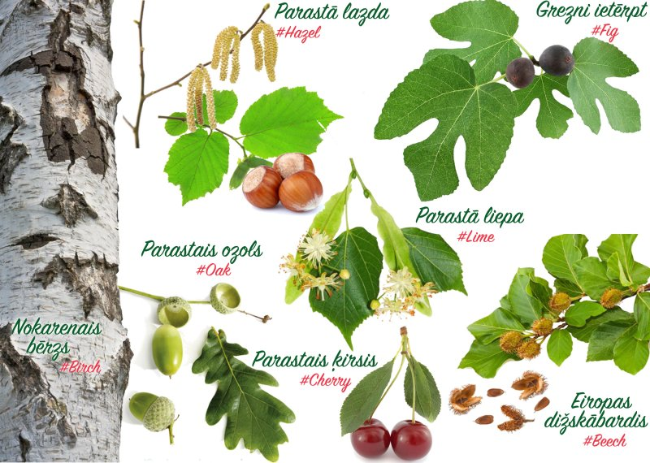

Veido animāciju par savu vidi
GrowApp ļauj tev veidot koku, dārzu un ainavu animācijas, uzņemot fotoattēlus ar saviem viedtālruņiem. Lietotne šos fotoattēlus pārvērš kustīgā bildē, kas parāda izmaiņas cauri gadalaikiem un pat cauri gadiem. Izklaidējoties, veidojot sava pagalma animācijas, tu palīdzēsi zinātniekiem labāk izprast klimata pārmaiņu ietekmi uz vidi.
Uzmanības centrā septiņi sugas
Palīdzi klimata pētniekiem, fotografējot sekojošās 7 koku sugas: Uzņemtajai fotogrāfijai apraksta laukā lūdzu pievieno atbilstošo #tēmturi:
- Parastais ozols (Quercus robur), #oak
- Parastā lazda (Corylus avellana), #hazel
- Eiropas dižskābardis (Fagus sylvatica), #beech
- Nokarenais bērzs (Betula pendula), #birch
- Parastais ķirsis (Prunus cerasus), #cherry
- Parastā liepa (Tilia cordata), #lime
- Grezni ietērpt (Ficus carica), #fig
Vairāk informācijas
Plašāka informācija un interaktīvā karte ar visām animācijām pieejama: www.growapp.todaySkolas
Skolas var pievienoties GLOBE fenoloģijas kampaņai.Izstrāde
Lietotne balstīta uz The GLOBE Netherlands Foundation idejas. Lietotnes un tīmekļa vietnes tehnisko izstrādi īstenoja Geodan un Forget the fishKontaktinformācija
info@growapp.todayAtbalsts
Lietotni finansē un atbalsta partneru konsorcijs:


Autori
- Kartes programmatūra
- OpenLayers 4.0, proj4
- Kartes servera programma
- Mapproxy
- Fona karte
- Openstreetmap, license
- Attēlu apstrāde un animāciju veidošana
- GraphicsMagic un GM for nodejs
- Fotoattēlu pārlūkošana
- Photoswipe
- Kartes papildu slāņi
- Nasa worldview
- Izkārtojums un ikonas
- Material Design Lite un Material Design Icons
- Lietojumprogrammas struktūra
- Apache cordova un Android SDK en community camera plugin
- Datu bāze
- Postgres un PostGIS
- Servera pielāgošana
- NodeJs
- Logotips
- Balstīts uz šo dizainu